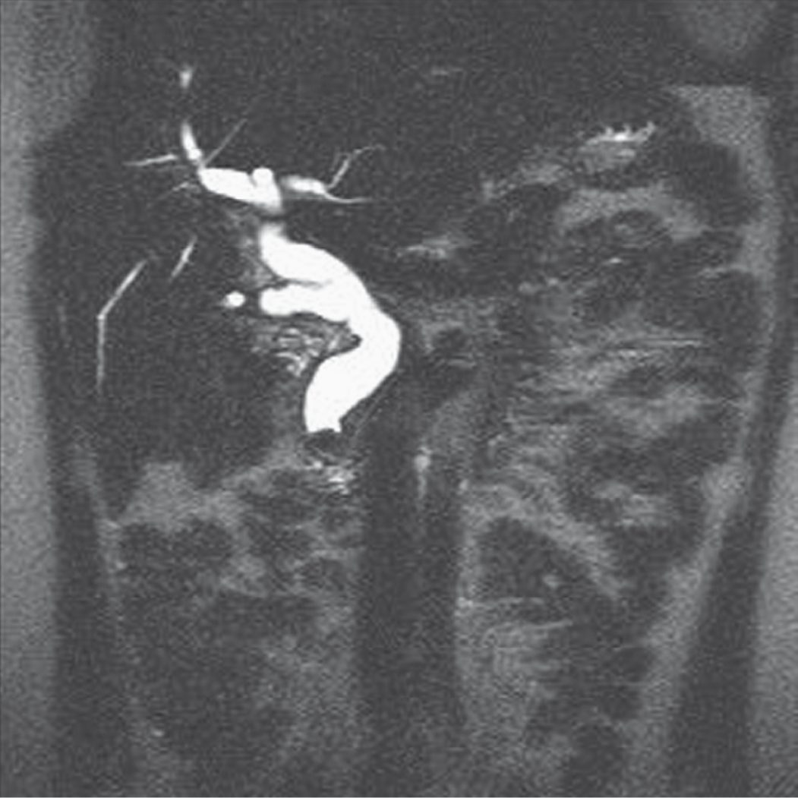
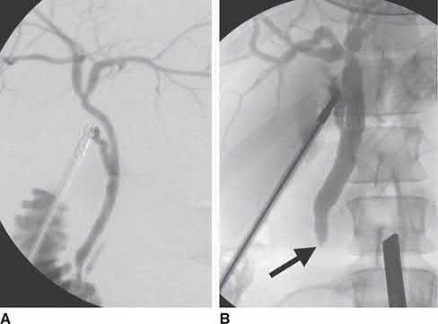
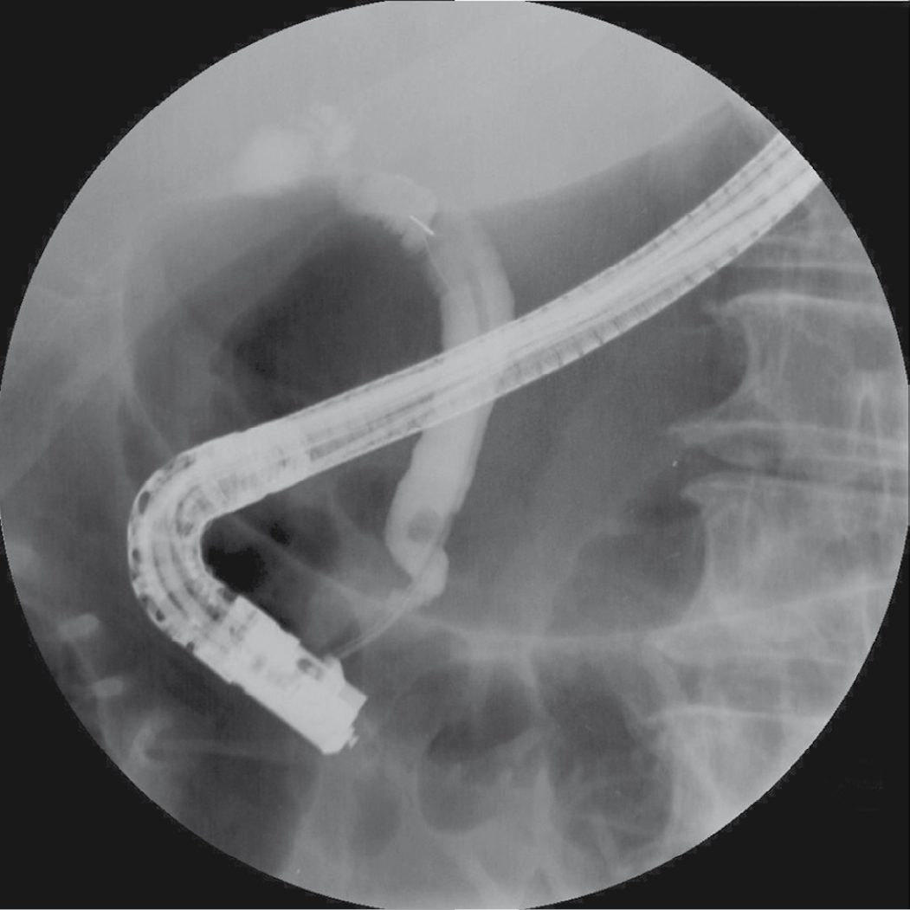
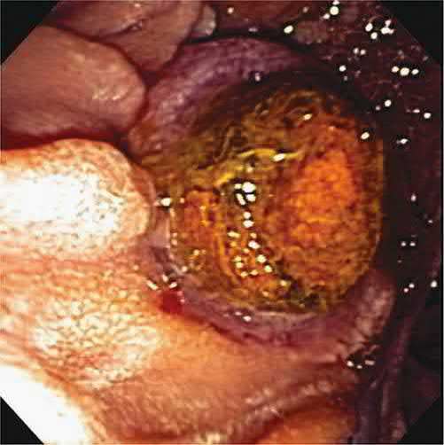

Choledocholithiasis
Summary
- Choledocholithiasis (the presence of gallstones within the common bile duct (CBD)) occurs in up to 20% of patients with cholelithiasis [1].
- Maingot's puts the figure at 10–15% of patients with cholelithiasis, rising with age to over 80% in those over 90 years old [2].
- It ranges from an asymptomatic incidental finding to obstructive jaundice, acute cholangitis, or gallstone pancreatitis, and management centres on duct clearance by endoscopic (ERCP), surgical (laparoscopic or open common bile duct exploration), or percutaneous means, generally combined with cholecystectomy to prevent recurrence [1][3].
Two UK documents govern this topic and they agree. NICE CG188 devotes a four-recommendation section to common bile duct stones [4], and the British Society of Gastroenterology's updated guideline gives a full evidence-graded treatment covering identification, endoscopic management, surgical management, difficult stones, and specific clinical settings [5].
The BSG's opening general principle is that patients diagnosed with common bile duct stones are offered stone extraction if possible, with evidence of benefit greatest for symptomatic patients [5].
Definition
Choledocholithiasis is the presence of one or more calculi within the common bile duct. Primary choledocholithiasis refers to de novo stone formation within the CBD, usually brown pigment stones related to bacterial infection; secondary choledocholithiasis, more common in Western populations, refers to cholesterol or pigment stones that form in the gallbladder and migrate into the CBD. Retained stones are secondary stones identified in the CBD within 2 years of cholecystectomy [1]. The duct in question is that downstream of the confluence of the hepatic ducts; stones proximal to the confluence constitute hepatolithiasis, a separate entity [2].
Pathophysiology
- Most CBD stones are migratory, originating in the gallbladder before passing through the cystic duct into the CBD [1][3].
- Brown pigment stones, more common in Asian populations, are associated with biliary infection, where bacterial hydrolysing enzymes liberate free bilirubin that precipitates with calcium as a stone; these are the predominant form of primary CBD stones [1].
- A normal ultrasound and normal liver function tests at the time of gallstone diagnosis suggest the incidence of concomitant CBD stones is under 5% [3].
Secondary versus primary stones
- Secondary duct stones (those that have migrated) are cholesterol stones in 75% of patients and black pigment stones in 25%; cholesterol stones contain more than 70% cholesterol by weight with variable bile salt and calcium, and over 90% of all cholesterol stones are radiolucent [2].
- Primary duct stones form within the ducts, are usually brown pigment, and are less than 20% cholesterol with higher bilirubin content than secondary stones [2].
- The distinguishing feature is bacteria: primary stones are associated with biliary stasis and bacteria, bacterial enzymes unconjugating bilirubin glucuronide to free bilirubin, which precipitates with calcium as the nidus; bacteria have been demonstrated in brown pigment stones by electron microscopy but not in black pigment stones [2].
- Intrahepatic stones in Asian populations are calcium bilirubinate and mixed stones containing more cholesterol and less bilirubin than the extrahepatic pigmented stones, with pathogenesis involving bile infection, stasis, low-protein and low-fat diets with malnutrition, and parasitic infection.
- The role of Ascaris lumbricoides and Clonorchis sinensis remains controversial, since these parasites occur widely while primary intrahepatic stones are found mainly in Southeast Asia [2].
The biofilm and why duct stones cause sepsis
Common bile duct stones are covered by a bacterial biofilm of adherent quiescent bacteria residing in a hermetic environment; when the stones obstruct the duct, cytokines released by the epithelial cells activate those bacteria to planktonic, virulent forms [2]. This is why obstruction from stones is so often accompanied by bacterial sepsis, and why sepsis is much less likely in malignant obstruction without choledocholithiasis [2].
Most stones pass spontaneously into the duodenum within hours, but prolonged obstruction leads to biliary cirrhosis and portal hypertension, on average about 5 years to cirrhosis, depending on the extent of obstruction. Even once cirrhosis is present the obstruction should still be relieved, because some reversal of portal hypertension and secondary biliary cirrhosis may be possible [2].
Clinical features
- Choledocholithiasis may be entirely asymptomatic and found incidentally on imaging [1][3].
- About 5% of common duct stones found during surgery are unsuspected preoperatively and discovered only on intraoperative evaluation, and in one autopsy study of 615 patients over age 60, 1% were found to have duct stones [2].
- When symptomatic, presentations range from biliary-type pain to signs of obstructive jaundice, darkening of the urine, scleral icterus and pale stools [1].
- The recognised presenting features are biliary colic, bile duct obstruction, bilirubinuria (tea-coloured urine), pruritus, acholic stools and jaundice, with nausea, vomiting and intermittent or constant epigastric or right-upper-quadrant pain; the biliary obstruction is usually incomplete [2].
- Because obstruction is typically acute, causing rapid bile duct distension and activation of pain fibres, jaundice due to choledocholithiasis is more often painful than jaundice from malignant obstruction, and the presence of pain is an important distinguishing feature [1].
- If ascending infection supervenes, the patient develops the features of acute cholangitis, classically Charcot's triad of right-upper-quadrant pain, obstructive jaundice and fever [3][6].
Examination and its limits
Physical examination may be entirely normal, or may show jaundice, scleral icterus, and right-upper-quadrant tenderness without peritoneal signs; early in the course it may not differ from that of cholecystitis [2]. Two patterns point beyond simple obstruction: severe tenderness suggests acute gallstone pancreatitis, while fever, hypotension and confusion suggest cholangitis [2].
Etiology
- Choledocholithiasis most commonly arises from migration of gallstones out of the gallbladder (secondary choledocholithiasis), the same risk factors (cholesterol/pigment stone formers) applying as for cholelithiasis generally [1].
- Behavioural factors associated with cholesterol stones are nutrition, obesity, weight loss and physical activity; biological factors are increasing age, female sex and parity, serum lipid levels, and Native American, Chilean and Hispanic ethnicity [2].
- Black pigment stone formation is associated with haemolytic disorders, cirrhosis, ileal resection, prolonged fasting and total parenteral nutrition, all of which supersaturate bile with unconjugated bilirubin so that bilirubinate precipitates with calcium and other anions to form the nidus [2].
- Primary CBD stone formation is linked to bile stasis and chronic bacterial or parasitic infection of the biliary tree (e.g. Clonorchis sinensis, recurrent pyogenic cholangitis) [1][7].
- Patients with primary duct stones should be checked for ampullary stenosis, duodenal diverticula and an abnormal sphincter of Oddi [8].
Diagnosis
Biliary-type pain, jaundice, cholestatic derangement of liver function tests, and a dilated bile duct (usually >8 mm) are all suggestive of choledocholithiasis, though no single laboratory test is pathognomonic [1]. Maingot's states the position plainly: the diagnosis cannot be made on history, examination and laboratory investigation alone, and distinguishing the symptoms of duct stones from those of gallbladder stones is difficult [2].
Biochemistry as a screening test
- Increasing age, a history of fever, cholangitis and pancreatitis are risk factors for duct stones, while elevations of serum bilirubin, AST or ALP are independent positive predictors [2].
- Although bilirubin and aminotransferase levels are high in 70% to 90% of patients at symptom onset, almost all patients have elevation of ALP and GGT; elevated amylase and lipase suggest pancreatitis, and leukocytosis suggests cholangitis, pancreatitis or associated acute cholecystitis [2].
- Crucially, laboratory evaluation of patients with duct stones can be repeatedly normal, and this should not dissuade further evaluation where suspicion persists [2].
| Test | Performance for CBD stones |
|---|---|
| Alkaline phosphatase | Highest sensitivity, 79.5% |
| Total bilirubin | Highest specificity, 87.5%; highest accuracy, 84.1% |
| Normal gamma-glutamyl transferase | Excellent for exclusion: negative predictive value 97.9%, likelihood of a stone only 2.1% |
| GGT, ALP, total bilirubin, ALT and AST all elevated | Sensitivity 87.5%, against 96% for ERCP |
Table reformats the reported test performance [2]. The ABSITE Review states the same pairing more compactly: GGT has the highest sensitivity and negative predictive value, alkaline phosphatase the highest specificity and positive predictive value [8].
Ultrasound and predictive combinations
- Transabdominal ultrasound is the first-line investigation, with roughly 90% specificity and 80% sensitivity for CBD stones, limited by operator dependence, bowel gas, and difficulty visualising the distal duct directly [1][3].
- Maingot's is considerably more sceptical: transcutaneous ultrasound is highly accurate for acute calculous cholecystitis and for gallstones above 2 mm, but its ability to establish choledocholithiasis is only about 50%, ranging from 30% to 90%, and one prospective comparison against ERCP, PTC or surgical follow-up found a sensitivity of just 25% with a 73% negative predictive value [2].
- Almost half of patients with duct stones do not have dilated ducts on ultrasound, so a negative study has limited value [2].
Gallbladder stone morphology carries some predictive weight. In an analysis of ultrasound data from 300 consecutive laparoscopic cholecystectomy patients, multiple small (<5 mm) or variable-sized gallbladder stones carried a 9.5% risk of synchronous asymptomatic duct stones against 2.5% for large (>5 mm) stones only [2].
- An elevated total bilirubin has low sensitivity but high specificity; when combined with an abnormal ultrasound, the pretest probability of choledocholithiasis approaches 90%, versus under 5% with a normal ultrasound and normal liver function tests [1].
- A predictive combination of age >55 years, dilated ducts on ultrasound, and serum bilirubin >30 micromol/L raises the probability of a stone to roughly 70% [3].
- Maingot's gives the same combination, over 55 years, bilirubin above 30 μmol/L (1.75 mg/dL), and a common bile duct over 6 mm on ultrasound, as a 72% probability [2].
- At the extremes, the combination of a dilated duct with sonographic stones, clinical cholangitis, and elevated AST and bilirubin gives a 99% likelihood of duct stones, while the absence of all four gives only 7% [2].
Cross-sectional and endoscopic imaging
- CT is not required for diagnosis but is highly sensitive (~90%) and provides a full anatomic assessment useful for preoperative planning [1].
- The reported performance varies sharply with technique: conventional CT has a sensitivity of 76% to 90% for suspected duct stones and unenhanced helical CT a sensitivity of 88%, specificity 97% and accuracy 94%, but against ERCP as reference, CT without biliary contrast showed poor concordance (sensitivity 65%, specificity 84%) and improved markedly with oral biliary contrast (both above 90%) [2].
- One comparison against EUS found non-contrast helical CT had 83% sensitivity and specificity for detecting duct dilatation, but only 22% sensitivity for identifying the duct stones themselves [2].
- MRCP is considered the gold standard non-invasive test (sensitivity >90% and specificity >99% for CBD stones) though it is limited in detecting small stones (<6 mm) or those impacted at the ampulla [1][3].
- Performed with T2-weighted sequences, the tract appears bright without contrast, instrumentation or ionising radiation, with duct stones as low-signal filling defects surrounded by high-intensity bile.
- Modern technique images the entire tract in a single 20-second breath-hold with resolution reaching fourth-order intrahepatic ducts, and stones as small as 2 mm can be detected even without biliary dilatation [2].
- Sensitivity is size-dependent: 100% for stones 11 to 27 mm, 89% for 6 to 10 mm, and 71% for 3 to 5 mm [2].
- Its practical value is in excluding stones and so avoiding unnecessary ERCP, in one series MRCP was negative in 74% of patients and missed clinically relevant stones in two, giving a 95% positive and 97% negative predictive value, and in another analysis performing MRCP would have avoided ERCP in 52% of high-risk and 80% of moderate-risk patients [2].
- Its limitations are resolution below that of ERCP so that small stones and crystals are not consistently detected, claustrophobia sometimes requiring sedation or general anaesthesia, degraded image quality with obesity, and outright exclusion by morbid obesity, pacemakers and aneurysm clips [2].
- Endoscopic ultrasound (EUS) is highly sensitive, particularly useful when persistent choledocholithiasis is suspected after gallstone pancreatitis, without the risk of worsening pancreatitis that ERCP carries [9].
- Using high frequencies of 7.5 and 12 MHz it achieves a resolution below 1 mm, making it the best available imaging technique for the extrahepatic biliary tract, with a diagnostic accuracy of 95% for duct stones [2].
- It is only semi-invasive, with almost no procedure-related complications and a negligible failure rate, several series totalling over 1000 patients have reported none [2].
- In a prospective study of 485 patients suspected of duct stones, EUS findings were verified in 463 as 237 true positive, 216 true negative, 2 false positive and 4 false negative, giving sensitivity 98%, specificity 99%, positive predictive value 99%, negative predictive value 98% and accuracy 97%, with no complications [2].
- ERCP is the most sensitive and specific test overall and allows simultaneous therapeutic clearance, but its invasive nature and complication profile (including post-ERCP pancreatitis, up to 10%) mean it is no longer used purely diagnostically [1][3].
- Its diagnostic performance against duct exploration or cystic duct cholangiography in 72 patients was sensitivity 90%, specificity 98%, accuracy 96% [2].
- Failed ERCP rates vary greatly between endoscopists, from 5% to 20%, and altered anatomy such as a Billroth II gastrojejunostomy may preclude access to the ampulla [2].
- The decisive argument against diagnostic ERCP is that, judged on clinical, laboratory and ultrasound criteria, up to 70% of patients turn out not to have duct stones at preoperative ERCP, meaning a large number are exposed to its risks and costs for nothing [2].
Intraoperative cholangiography during cholecystectomy can also identify CBD stones [1][10].


NICE gives a strictly sequential pathway: liver function tests and ultrasound first [4]; MRCP considered only if ultrasound has not found duct stones but the duct is dilated and/or liver function tests are abnormal [4]; and EUS considered only if MRCP does not allow a diagnosis [4].
- The BSG structures the same decision by pre-test probability rather than by strict sequence.
- Transabdominal ultrasound and liver function tests are recommended for patients with suspected duct stones, with the explicit rider that normal results do not preclude further investigation if clinical suspicion remains high [5].
- MRCP and EUS are both recommended as highly accurate tests for patients with an intermediate probability of disease, MRCP predominating, with the choice between them determined by individual suitability, availability, local expertise and patient acceptability, not by a fixed hierarchy [5].
The BSG then adds the step NICE omits: a patient with an intermediate probability of stones who is proceeding directly to cholecystectomy may go straight there, supplemented by intraoperative cholangiography or laparoscopic ultrasound, rather than having MRCP or EUS first. ERCP is reserved for patients in whom preceding assessment indicates a need for endoscopic therapy [5].
- For the high-probability group the BSG cites the ASGE criteria: in patients with symptomatic gallbladder stones, the likelihood of duct stones is high if a calculus is visible in the duct on ultrasound, if there are features of cholangitis, or if duct dilatation on ultrasound is combined with jaundice.
- Further investigation before scheduling duct clearance is not mandated in this setting, though CT to exclude pancreatobiliary malignancy should always be considered according to the clinical scenario [5].
- Low probability is defined as normal liver function tests and ultrasound in the absence of a preceding clinical predictor such as cholangitis or gallstone pancreatitis [5].
Scoring and Severity
There is no dedicated formal severity score for choledocholithiasis in the source textbooks. Risk stratification is instead expressed as predictive probability based on age, ductal dilation and bilirubin level [3], and management is guided by whether the patient has low, intermediate or high probability of having a duct stone, determining choice between intraoperative cholangiography alone, preoperative MRCP, or ERCP [1].
How often silent stones matter
- The nearest thing to a severity framework is the natural history of an untreated stone, which is far more benign than the reputation of the disease suggests.
- In a large review, routine intraoperative cholangiography in 4209 laparoscopic cholecystectomy patients without preoperative suspicion of duct stones found a 4% rate of stones; among 5179 comparable patients who did not undergo cholangiography, 0.6% went on to develop symptoms from residual stones.
- Extrapolating, only about 15% of silent duct stones ever become symptomatic, so 167 cholangiograms would be needed to detect one stone destined to cause symptoms, at the cost of eight unnecessary duct explorations or ERCPs [2].
- A prospective study makes the same point from the other direction.
- Operative cholangiography succeeded in 962 of 997 laparoscopic cholecystectomy patients; 46 (4.6%) had at least one filling defect, but 12 had normal cholangiograms 48 hours later, implying a 26% false-positive rate, and a further 12 were clear at 6 weeks, implying a 26% spontaneous passage rate that was not predictable from stone number, stone size or duct diameter.
- Only 2.2% of the whole population (48% of those with a positive cholangiogram) needed postoperative ERCP, meaning a treatment decision based on cholangiography alone would have subjected 52% of positive patients to unnecessary intervention [2].
Treatment and Management
- All patients with symptomatic (and generally asymptomatic) CBD stones should undergo cholecystectomy where possible along with either surgical or endoscopic duct clearance [3].
- In patients with a high index of suspicion, the surgeon proceeds with a plan to clear the duct, either via preoperative or postoperative ERCP, or laparoscopic common bile duct exploration (LCBDE) combined with cholecystectomy in a single stage [1].
- Endoscopic sphincterotomy with stone extraction by ERCP clears the duct in more than 75% of patients on a first attempt and up to 90% with repeated procedures; because more than half of patients managed by ERCP alone (without cholecystectomy) develop recurrent biliary symptoms, same-admission cholecystectomy is advised [1].
- Numerous studies demonstrate that one-stage management with CBD exploration at the time of cholecystectomy achieves equivalent stone clearance to the two-stage ERCP-plus-cholecystectomy approach, with decreased length of stay, cost, and complication rates including pancreatitis [1].
Endoscopic technique
- Sphincterotomy divides the papilla and sphincter muscles to widen the distal duct using a sphincterotome (a Teflon catheter with an exposed cautery wire at the tip) the length of the intraduodenal portion of the duct limiting the extent of the cut [2].
- Balloon sphincteroplasty is the sphincter-preserving alternative, using a 6 or 8 mm high-pressure hydrostatic balloon to dilate the papilla.
- Its drawback is the smaller opening created, with reported failure rates of 22% for stone extraction and a need for mechanical lithotripsy in 31%, and it has been associated with a pancreatitis rate 19 times that of sphincterotomy, though one series recorded severe pancreatitis in only 1 of 63 patients with an 84% extraction rate [2].
- Once the sphincter is divided, stones are removed with a Dormia basket or a balloon catheter.
- The basket has better traction and is recommended for larger stones over 1 cm; the balloon occludes the lumen when inflated, suiting small stones and gravel, and can be passed over a guidewire for intrahepatic stones [2].
- ERCP stone extraction succeeds 80% to 90% of the time with sphincterotomy plus balloon or basket retrieval, and adding mechanical, electrohydraulic, laser or extracorporeal shockwave lithotripsy for large stones raises this to over 95% [2].
The difficult stone
- Large stones (generally >2.5 cm), altered anatomy (e.g.
- Roux-en-Y gastric bypass), impacted stones, intrahepatic stones, or multiple stones are the most common causes of ERCP failure, in which case operative CBD exploration, laparoscopic-assisted ERCP, or percutaneous transhepatic cholangiography (PTC) drainage should be considered [1].
- Maingot's names three specific situations that make extraction difficult: a stone larger than 1.5 cm, a stone proximal to a stricture, and multiple impacted stones [2].
- Mechanical lithotripsy is the commonest and simplest means of fragmenting large duct stones, trapping the stone in a large strong basket and crushing it against a metal sheath by cranking tension into the wires, with reported clearance rates of 80% to 90% [2].
- Success is size-dependent, over 90% for stones under 1 cm against 68% for stones over 2.8 cm, and among size, number, impaction, bilirubin, cholangitis and duct diameter, only impaction independently predicted failure [2].
- Stone composition matters too: the soft stones of Oriental cholangitis are large but crushable, sometimes even with a Dormia basket, whereas calcified stones resist mechanical crushing [2].
- Chemical dissolution through nasobiliary catheters or T-tubes with mono-octanoin or methyl tertiary butyl ether has largely been abandoned because of high complication rates, poor results and technical difficulty [2].
Large-balloon dilatation of the distal duct is an option after standard extraction fails. In 58 such patients dilated with a 10 to 20 mm balloon, clearance succeeded in 89% of those with a tapered distal duct and 95% of those with square, barrel-shaped or large (>15 mm) stones, mechanical lithotripsy salvaging the remainder, but complication rates were high at 33% and 7.5% respectively, comprising mild pancreatitis, mild cholangitis and bleeding, none of which required surgery [2].
Temporising with a stent
Where several procedures or sessions are needed, partial stone impaction can cause stasis and cholangitis, so the tree should be decompressed with a nasobiliary catheter or biliary stent alongside broad-spectrum antibiotics; this lets bilirubin fall and brings the rate of post-procedure cholangitis down to that after stone clearance [2]. Up to 30% of patients stented for large stones have spontaneous disappearance of the stones on subsequent ERCP, possibly from frictional movement against the stent or improved bile flow, and adding oral ursodeoxycholic acid to stenting made 9 of 10 patients stone-free against 0 of 40 with stenting alone [2].
- Permanent stenting is nevertheless a last resort.
- In 58 elderly patients treated with permanent stents for endoscopically irretrievable stones, 40% developed complications (34 complications in 23 patients, cholangitis most frequent) and at a median 36 months 44 had died, 9 from biliary causes [2].
- In a prospective comparison of 36 high-risk patients with difficult stones, the actuarial incidence of recurrent acute cholangitis was 8% after electrohydraulic lithotripsy against 63% after stenting, and actuarial mortality 41% against 74% [2].
Complications of ERCP itself
Mortality after diagnostic ERCP is about 0.2%, more than doubling to 0.5% with therapeutic intervention, essentially the same rates as for laparoscopic cholecystectomy [2]. Cardiopulmonary complications are the leading cause of death, including arrhythmia, hypoventilation and aspiration, arising from premorbid conditions or from sedation and analgesia [2].
| Complication of ERCP | Rate |
|---|---|
| Pancreatitis | 1%–7% by consensus definition |
| Bleeding, primarily sphincterotomy-related | 0.8%–2% |
| Perforation | 0.3%–0.6% |
| Cholecystitis | 0.2%–0.5% |
| Cholangitis | 1% |
| Mortality, diagnostic | 0.2% |
| Mortality, therapeutic | 0.5% |
- Table reformats the reported complication rates [2].
- The consensus definition of ERCP-induced pancreatitis is new or worsened abdominal pain, serum amylase greater than three times the upper limit of normal at 24 hours, and a requirement for at least 2 days of hospitalisation [2].
- Risk factors are prior ERCP pancreatitis, non-dilated ducts, normal bilirubin, young age, female sex and suspected sphincter of Oddi dysfunction, a woman with normal bilirubin and suspected sphincter of Oddi dysfunction carries an 18% risk against 1.1% for a low-risk patient, and one in five such episodes is severe, needing more than a 10-day stay or resulting in necrosis, pseudocyst, abscess needing drainage, or death [2].
- Because the highest complication rates fall on the group least likely to benefit, the most effective way to reduce post-ERCP pancreatitis is to avoid unnecessary ERCP [2].
- Of the pharmacological prophylaxis studied, somatostatin and gabexate showed benefit in meta-analysis but not in multicentre randomised trials, non-ionic contrast did not help, and glyceryl trinitrate reduced pancreatitis in two placebo-controlled trials (presumably by lowering sphincter of Oddi pressure) but its hypotensive effect limits use.
- Pancreatic stents reduce post-sphincterotomy pancreatitis in patients suspected of sphincter of Oddi dysfunction [2].
- Prophylactic antibiotics were not found beneficial in reducing infectious complications of ERCP in a meta-analysis [2].
Intraoperative detection
- At the time of surgery, intraoperative cholangiography (IOC) is the diagnostic method used most often, introduced by Mirizzi to open biliary surgery in the 1930s [2].
- IOC and ERCP have similar sensitivity and specificity for duct stone detection.
- Cannulation rates with successful cholangiography range from 75% to 100%, and laparoscopic cholangiography reports sensitivity 80–90%, specificity 76–97%, positive predictive value 67–90%, negative predictive value 90–98% and accuracy 95%, comparable with open IOC, with a false-positive rate of 0.8% in a large review [2].
- Intraoperative ultrasound is roughly equivalent to IOC, avoids the risk of duct injury from placing a cholangiography catheter, and cannot produce a false positive from air introduced into the tree, but its use has been limited by equipment cost and availability and a considerable learning curve [2].
Cholecystectomy after endoscopic clearance
After duct clearance by non-operative means, cholecystectomy is generally recommended in younger patients to reduce future cholecystitis and recurrent biliary colic, with as many as 24% requiring cholecystectomy at an average of 14 months after endoscopic papillotomy [2]. The concern that sphincterotomy causes gallbladder stasis, bacterial overgrowth and raised bile acids (potentially increasing gallbladder cancer risk over 10 to 20 years) is countered by a study showing sphincterotomy actually decreased gallbladder bile stasis, improved emptying, and reduced lithogenicity by prolonging nucleation time [2].
- For elderly and high-risk patients the evidence supports leaving the gallbladder in situ.
- Of 191 patients with a median age of 76 whose gallbladders were left after ERCP, only 5% required subsequent uneventful cholecystectomy while 26% died of non-biliary causes; of 146 patients followed for a mean 24 months, 5% underwent cholecystectomy at an average 18 months, and Cox regression showed the need did not correlate with age, sex, presence or number of gallbladder stones, or underlying disease; of 118 patients followed a median 42 months, 11% needed cholecystectomy while 42% died within 2 to 87 months; and of 33 elderly patients followed a mean 42 months, one (3%) needed cholecystectomy for acute cholecystitis and 91% remained asymptomatic [2].
- Maingot's therefore concludes it is reasonable to perform cholecystectomy on high-risk or elderly patients as needed rather than prophylactically after non-operative treatment of duct stones [2].


- NICE gives four recommendations, of which the first is the one that most often surprises: bile duct clearance and laparoscopic cholecystectomy are offered to people with symptomatic or asymptomatic common bile duct stones [4].
- Contrast this with gallbladder stones, where asymptomatic disease attracts reassurance and no treatment [4].
- The same organ system, the same patient, the same incidental finding, and the opposite advice, because the complications of a duct stone are so much worse than those of a gallbladder stone.
- The remaining three cover technique.
- The duct is cleared either surgically at the time of laparoscopic cholecystectomy, or with ERCP before or at the time of the cholecystectomy [4].
- If the duct cannot be cleared with ERCP, biliary stenting achieves drainage only as a temporary measure until definitive endoscopic or surgical clearance [4].
- And where elective ERCP is being planned, the lowest-cost option suitable for the clinical situation should be chosen between day-case and inpatient procedures [4].
- The BSG's evidence for treating rather than observing comes from the Swedish GallRiks national cohort.
- Of 34,200 patients undergoing intraoperative cholangiography, 3969 (11.6%) had one or more duct stones.
- Among those with adequate follow-up, 25.3% of patients whose stones were left in situ had an unfavourable outcome, pancreatitis, cholangitis, duct obstruction within 30 days, or later symptoms with proven stones at ERCP, against 12.7% of those scheduled for extraction (OR 0.44, 95% CI 0.35 to 0.55).
- The benefit persisted even for stones under 4 mm, where the risk was 8.9% with planned extraction against 15.9% with conservative treatment (OR 0.52, 95% CI 0.34 to 0.79) [5].
- The BSG is careful to note that no controlled studies exist on the natural history of stones found incidentally in asymptomatic patients being investigated for other problems, and that patients should be told the advice to extract in that setting rests on evidence from symptomatic patients plus expert opinion [5].
- On endoscopic technique the BSG makes four recommendations beyond those given for cholangitis.
- Endoscopic papillary balloon dilation is recommended as an adjunct to biliary sphincterotomy to facilitate removal of large duct stones [5].
- Balloon dilation without prior sphincterotomy carries an increased risk of post-ERCP pancreatitis but may be considered in selected patients (those with uncorrected coagulopathy or difficult biliary access from altered anatomy) and if performed, an 8 mm diameter balloon is recommended [5].
- Its accepted contraindications are biliary strictures or malignancy, previous biliary surgery other than cholecystectomy, cholangitis, pancreatitis, prior access papillotomy, and large stones usually defined as over 12 mm [5].
- Cholangioscopy-guided electrohydraulic or laser lithotripsy is recommended when other endoscopic options fail to achieve duct clearance, achieving stone clearance in 73–97% of patients in whom standard techniques including mechanical lithotripsy and balloon dilation had failed; cholangitis has been reported in up to 9%, necessitating prophylactic antibiotics [5].
On surgical management the BSG's central recommendation is that transcystic or transductal laparoscopic bile duct exploration is an appropriate technique for stone removal in patients undergoing laparoscopic cholecystectomy, with no evidence of a difference in efficacy, mortality or morbidity compared with perioperative ERCP, although exploration is associated with a shorter hospital stay, the two approaches are to be considered equally valid treatment options [5]. Training surgeons in laparoscopic duct exploration is encouraged specifically in order to decrease the number of interventions required per patient [5].
Intraoperative cholangiography or laparoscopic ultrasound is not considered mandatory for all patients undergoing cholecystectomy; it is suggested for those with an intermediate-to-high pre-test probability of duct stones who have not had the diagnosis confirmed preoperatively by ultrasound, MRCP or EUS [5].
For difficult stones, laparoscopic exploration and ERCP, supplemented by balloon dilation with prior sphincterotomy, mechanical lithotripsy or cholangioscopy as needed, are highly successful, and percutaneous radiological stone extraction and open duct exploration should be reserved for the small number of patients in whom these fail or are not possible [5]. Where standard endoscopic cannulation including access papillotomy is not possible, percutaneous or EUS-guided procedures can be considered to facilitate a subsequent ERCP [5].
- On the gallbladder, the BSG is firmer than Maingot's: cholecystectomy is recommended for all patients with duct stones and gallbladder stones unless there are specific reasons for considering surgery inappropriate, with sphincterotomy and endoscopic clearance alone an acceptable alternative only where operative risk is prohibitive [5].
- Where the gallbladder has already been removed, biliary sphincterotomy and endoscopic stone extraction is the primary treatment [5].
- Two altered-anatomy settings are addressed: ERCP can be performed successfully in Billroth II anatomy, with a forward-viewing endoscope recommended where a duodenoscope proves difficult, and patients with Roux-en-Y gastric bypass and duct stones should be referred to centres able to offer the advanced endoscopic and surgical options needed [5].
Surgeries
- Laparoscopic common bile duct exploration uses either a transcystic or transcholedochal approach.
- The transcystic route uses a flexible guidewire passed through the cystic duct into the CBD via the Seldinger technique; sphincteroplasty under fluoroscopic guidance or choledochoscopy with basket retrieval clears stones into the duodenum or out through the cystic duct [1].
- This approach is preferred when feasible (technically easier, no advanced laparoscopic suturing needed), but relative contraindications include more than eight stones, a stone >1 cm, intrahepatic stones, or a cystic duct too small to dilate [1].
- Maingot's gives the complementary indications for going transductal instead: stones greater than 6 mm in diameter, intrahepatic stones, a cystic duct under 4 mm, and a cystic duct entering posteriorly or distally [2].
- Reported use of the transcystic route varies enormously between series, from 5% to 98% [2].
For larger stones or when transcystic access fails, a transcholedochal approach (laparoscopic choledochotomy) is used: a longitudinal incision at least as large as the largest stone is made in the CBD after stay sutures are placed; ducts ≥1 cm can be closed primarily, while smaller ducts or incompletely cleared systems require a T-tube; completion cholangiography documents clearance [1][3]. Maingot's limits the choledochotomy to 1 cm or the size of the largest stone, made on the anterior surface with scissors or scalpel [2].
Clearing the duct laparoscopically
- Clearance begins with irrigation, which flushes stones under 3 mm and sludge, facilitated by 1 to 2 mg of intravenous glucagon to relax the sphincter of Oddi; 4F Fogarty-type balloons are then passed for retrograde extraction, and stones may be captured with a Dormia-type basket inserted through the cystic duct, the choledochotomy, or the working port of the choledochoscope [2].
- Newer 3 mm choledochoscopes can be passed through the cystic duct, and placing the laparoscopic and choledochoscopic images on one screen with a video mixer is helpful [2].
- Electrohydraulic lithotripsy can fragment larger stones under direct choledochoscopic contact, with care taken to avoid duct injury from inaccurate application [1][2].
- Success rates for laparoscopic exploration are 80% to 90%, comparable with the open method, with morbidity of 8% to 10% and reported mortality of 0% to 2% [2].
Closing the choledochotomy: T-tube or primary closure
- A T-tube may be left for later study of the tree, for decompression where clearance was incomplete, or for access in recurrent stones; alternatively the choledochotomy is closed primarily with 4-0 or 5-0 Vicryl [2].
- Primary closure shortened hospital stay in one study from 9 days to 5, without any increase in bile leak or peritonitis, and it avoids the specific complications of a T-tube, dislodgement, bacteraemia, fracture of the tube, and bile leak or peritonitis at removal [2].
- Alternatives include an antegrade stent placed into the duct much as at ERCP, and a modified ureteral catheter passed through the cystic duct and brought out through the abdominal wall after the choledochotomy is closed, in 30 patients this caused no catheter-related complications and was removed at a median 5 days against 29 days for a T-tube [2].
- If laparoscopic exploration is unsuccessful, a transcystic catheter can be brought out through the abdominal wall to decompress the system and allow postoperative cholangiography, and if advanced into the duodenum it aids cannulation at a subsequent ERCP [2].
Intraoperative ERCP
- Intraoperative ERCP allows one anaesthetic to cover both cholecystectomy and duct clearance.
- In 592 patients undergoing intraoperative cholangiography, 34 proceeded to intraoperative ERCP with a 100% cannulation rate, the surgeon passing a thin guidewire through the cholangiography catheter and the sphincter of Oddi into the duodenum while awaiting the endoscopist, achieving duct clearance in 94%, with operative time prolonged by 1.5 hours but no significant increase in length of stay and no postoperative pancreatitis [2].
- In a second series of 60 patients, general anaesthesia was prolonged only 40 minutes including setting up the endoscopic equipment, and final duct clearance reached 100% [2].
- The argument for doing it intraoperatively rather than postoperatively is that it identifies anatomic problems such as a duodenal diverticulum that would make a later ERCP fail, leaving the surgeon the option of converting to open duct exploration under the same anaesthetic.
- The cholecystectomy should be completed before the ERCP so endoscopy-induced small bowel distension does not obscure the gallbladder [2].
Percutaneous approaches
- Where ERCP is unavailable, anatomically impossible or unsuccessful, percutaneous transhepatic cholangiography with transhepatic stone removal is the alternative: a needle is passed percutaneously into the intrahepatic ducts, a cholangiogram performed, and a wire and then a catheter placed for external drainage and access [2].
- The technique is particularly useful for intrahepatic stones and other proximal duct disease [2].
- Reported results include a series of 53 patients in whom surgery was contraindicated and ERCP had failed, treated by a modified Dormia basket via the transhepatic route with 93% success and 12% morbidity and 4% mortality; transhepatic cholangioscopy with lithotripsy after tract dilatation with 90% to 100% success and 5% to 8% complications; laser lithotripsy through percutaneous cholangioscopy in 13 patients with 92% fragmentation and clearance in all, though 11 needed added sphincterotomy or a stent and two bled, a 15% severe complication rate; and percutaneous choledochoscopy for stone extraction in 75 patients (transhepatic in 48 and through a T-tube tract in 27) with complete clearance in 69 (92%) [2].
Open common bile duct exploration
- Open common bile duct exploration is generally reserved for failed minimally invasive approaches.
- Via a right-upper-quadrant or midline incision, a choledochotomy is made in the supraduodenal duct, and stones are removed by flushing, balloon catheters, wire baskets, or direct visualisation with a flexible choledochoscope; a T-tube is placed and a completion cholangiogram obtained before closure [1].
- The first surgical exploration of the duct was performed in 1890 by Ludwig Courvoisier, and before laparoscopic cholecystectomy the operation achieved greater than 90% successful clearance.
- The duct is opened longitudinally so as not to compromise its blood supply, and cleared with Fogarty balloons, saline irrigation, stone forceps and scoops, with choledochoscopy used to confirm clearance and exclude other ductal pathology [2].
- It is now rare: in a series of 326 laparoscopic duct explorations, only five patients were converted to laparotomy and only two of those for open exploration [2].
- Open exploration carries a morbidity of 8–15%, mortality of 1–2%, and a retained stone rate below 5% [1].
Surgical biliary drainage procedures
With dilated ducts, multiple impacted stones, a distal stricture, or intrahepatic stones, a drainage procedure such as choledochoduodenostomy or Roux-en-Y hepaticojejunostomy provides better long-term outcomes; choledochoduodenostomy permits future endoscopic access but carries a risk of "sump syndrome" from poor drainage of the distal duct segment, an issue avoided by the Roux-en-Y approach [1]. Maingot's lists the indications as multiple stones, incomplete stone removal, impacted irremovable distal stones, a markedly dilated duct, distal obstruction from tumour or stricture, and recurrence after previous duct exploration [2].
- Transduodenal sphincteroplasty is the procedure of choice when impacted ampullary stones cannot be cleared via choledochotomy: after a Kocher manoeuvre, a longitudinal duodenotomy exposes the ampulla, and a sphincterotomy of roughly 1.5 cm allows stone removal, with the duodenotomy closed transversely to avoid stricture [1].
- Maingot's adds the operative detail: the ampulla is located by passing a biliary Fogarty catheter through the cystic duct into the duodenum, the pancreatic duct entrance identified at the 4 o'clock position where possible (sometimes aided by intravenous secretin) and the sphincteroplasty started at 11 o'clock and extended with sequential absorbable sutures until the opening admits a biliary dilator the size of the common duct, the last suture placed at the apex to prevent a duodenal leak [2].
- In a review of 78 such patients, 26 operated urgently, three died, of pulmonary embolism, pulmonary sepsis and multiorgan failure complicating preoperative necrotising pancreatitis, and 30 (38%) had complications of which 20 were directly operative, including hyperamylasaemia in 17 with one clinical pancreatitis and one duodenal fistula that healed conservatively.
- No death was directly attributable to the sphincteroplasty [2].
- Choledochoduodenostomy was first performed by Riedel in 1888 (the patient dying of anastomotic disruption from a missed distal stone) with the first success by Sprengel in 1891 [2].
- Its classic indication is the "funnel syndrome", a distal duct stenosis in the presence of primary duct stones, where removing the stones alone gives only temporary benefit [2].
- Feasibility requires a duct at least 1.2 cm in diameter to allow a stoma wide enough for good drainage without stenosis, and the anastomosis is placed as distally as possible to reduce sump syndrome.
- A side-to-side single-layer anastomosis is most commonly used, with a 2 cm duct incision along the long axis as close to the duodenum as possible and the duodenotomy perpendicular to it [2].
| Outcome after choledochoduodenostomy | Figure |
|---|---|
| Morbidity | 23% |
| Mortality | 3% |
| Cholangitis in largest long-term series | 0%–6% |
| Asymptomatic at 5 years | 70%–80% |
| Minimum stoma size to prevent sump syndrome and cholangitis | 14 mm |
- Table reformats the reported outcomes [2].
- Mortality is most often from medical complications such as pulmonary embolism, myocardial infarction or heart failure [2].
- Cholangitis after the procedure was initially attributed to ascending reflux of duodenal contents but is now believed to result from stenosis of the anastomotic stoma.
- Sump syndrome is caused by food and debris accumulating between the stoma and the papilla, contaminating the ducts and producing recurrent cholangitis and even secondary biliary cirrhosis, and stomal patency is regarded as the single most important factor in preventing both [2].
- In a review of 126 patients over 19 years, mortality was 4% with all deaths in patients over 70, morbidity comprised wound infection in 14% and a prolonged bile leak in 3%, and 94% were symptom-free at 1 to 19 years [2].
- The alternative is choledochojejunostomy or hepaticojejunostomy, using either a loop with a side-to-side Braun jejunojejunostomy to divert intestinal contents, or a Roux-en-Y, which the Maingot's authors prefer.
- The Roux limb is usually brought retrocolic at 40 to 60 cm to protect against intestinal reflux and secondary cholangitis, with an end-to-side anastomosis in fine absorbable suture and a drain left against leakage [2].
- In 43 patients undergoing Roux-en-Y choledochojejunostomy after complex biliary clearance there were no deaths and one major complication, with 98% having good long-term results [2].
- A comparison of 64 choledochoduodenostomies against 66 choledochojejunostomies found no difference in morbidity or mortality.
- Of 120 patients followed a mean 29 months, 107 were symptom-free and 13 had symptoms suggestive of cholangitis, attributable in the duodenostomy group to sump syndrome, anastomotic stricture or unknown causes, and in the jejunostomy group to anastomotic stricture, residual intrahepatic stones or unknown causes, the authors preferring choledochoduodenostomy on the grounds that it is easier and faster and permits future endoscopic intervention, while acknowledging the choice is often dictated by anatomy and the feasibility of a tension-free anastomosis [2].
- Whether to stent a surgical biliary anastomosis remains controversial.
- Earlier work argued that stents decompress the duct, reduce bile leak, permit postoperative radiographic evaluation and reduce fibrotic narrowing during early healing, with one series reporting higher success when stented beyond 1 month.
- Against this, excellent results were obtained in 86% of 123 patients undergoing stentless hepaticojejunostomy, stenting beyond a month produced outcomes no different from unstented anastomoses, and the counter-argument is that stents provoke an inflammatory reaction predisposing to stenosis [2].
- In 97 unstented biliary-enteric anastomoses only one leak occurred, resolving spontaneously within a week, with no strictures at a mean 13 months [2].
- In 84 patients undergoing unstented reconstruction for benign strictures over 15 years, results were excellent or good in 83%, with anastomotic strictures in 10 patients; on multivariate analysis only postoperative complications and the degree of duct dilatation independently predicted outcome, a duct under 15 mm being present in 60% of those with a poor outcome [2].
- Peptic ulcers occurred in only 2.3% of that series, no higher than the general population, which argues against the suggestion that diverting bile from the duodenum causes them [2].
Laparoscopic biliary drainage has been reported for both benign and malignant disease: a 2011 systematic review of 89 patients from 19 reports (many combined with gastric bypass) found a 98.9% success rate with 12.3% morbidity and 5.6% mortality at a median follow-up of only 13 months [2]. Robotic application to biliary surgery remains limited to two case reports and one small series, describing robotic-assisted duct exploration and a robotic choledochojejunostomy with intracorporeal Roux limb construction [2].
Complications
- Untreated or incompletely treated choledocholithiasis can precipitate acute cholangitis, with the attendant risk of septic shock (Reynolds pentad) [1].
- A stone impacted at the ampulla of Vater can obstruct the pancreatic duct and precipitate gallstone pancreatitis [6][9].
- Chronic or long-standing choledocholithiasis can cause fibrosis and secondary biliary stricture [1], and prolonged obstruction leads to biliary cirrhosis and portal hypertension over an average of about 5 years [2].
- Rarely the course is complicated by hepatic abscess [2].
- Choledochoduodenostomy carries the specific long-term risk of sump syndrome, with debris collecting in the poorly draining distal duct segment [1].
- ERCP-related complications include pancreatitis (up to 10%), bleeding, and perforation [1].
- Fewer than 5% of patients undergoing cholecystectomy will have a retained duct stone, and 95% of those are cleared with ERCP [8].
Prognosis
- With appropriate duct clearance and cholecystectomy, outcomes are generally excellent.
- Transcystic and transcholedochal laparoscopic clearance, and open exploration, all achieve stone clearance rates greater than 90% in experienced hands, with a low rate of retained stones after open exploration (<5%) [1].
- Recurrent choledocholithiasis or missed disease is more likely when cholecystectomy is not performed at the same time as duct clearance, given the persistent source of migrating gallbladder stones [1].
- Against this, several series of elderly and high-risk patients whose gallbladders were deliberately left in situ after endoscopic clearance report subsequent cholecystectomy rates of only 3% to 11%, with most deaths in follow-up from non-biliary causes, so the balance between clearing the duct and removing the gallbladder shifts with age and fitness [2].
References
- Sabiston Textbook of Surgery, 22nd ed., Ch. 88
- Maingot's Abdominal Operations, 13th ed., Ch. 63, Choledocholithiasis and Cholangitis
- Oxford Handbook of Clinical Surgery, 5th ed., Ch. 9
- NICE Clinical Guideline CG188: Gallstone disease: diagnosis and management (2014), 1.1.1; 1.1.2; 1.1.3; 1.2.1; 1.3; 1.3.1; 1.3.2; 1.3.3; 1.3.4 www.nice.org.uk
- British Society of Gastroenterology: Updated guideline on the management of common bile duct stones (CBDS). Gut 2017;66:765–782, Endoscopic management of CBDS; Endoscopic management of CBDS; high-quality evidence, strong recommendation; Endoscopic management of CBDS; low-quality evidence, strong recommendation; Endoscopic management of CBDS; moderate-quality evidence, strong recommendation; General principles in management of common bile duct stones; General principles in management of common bile duct stones; low-quality evidence, strong recommendation; Identifying individuals with CBDS; Identifying individuals with CBDS; low-quality evidence, strong recommendation; Identifying individuals with CBDS; low-quality evidence, weak recommendation; Identifying individuals with CBDS; moderate-quality evidence, strong recommendation; Management of 'difficult' ductal stones; Management of 'difficult' ductal stones; low-quality evidence, strong recommendation; Management of CBDS in specific clinical settings; Management of CBDS in specific clinical settings; high-quality evidence, strong recommendation; Summary of recommendations; Surgical management of CBDS; Surgical management of CBDS; high-quality evidence, strong recommendation; Surgical management of CBDS; low-quality evidence, weak recommendation gut.bmj.com
- Browse's Introduction to the Symptoms and Signs of Surgical Disease, 6th ed., Ch. 15
- Sabiston Textbook of Surgery, 22nd ed., Ch. 89
- The ABSITE Review, 2022, Ch. Biliary System
- Sabiston Textbook of Surgery, 22nd ed., Ch. 92
- Maingot's Abdominal Operations, 13th ed., Ch. 62
- Maingot's Abdominal Operations, 13th ed., Ch. 5